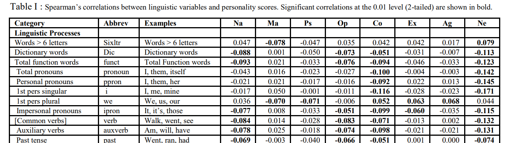

Downloaded: 300px-The_Dark_Triad.png
Downloaded: 138px-Dark_Triad.svg.png
Downloaded: 16px-Symbol_category_class.svg.png TP4
Avant propos
Ce texte étant un rapport d’étape dans la rédaction du travail final, il sera écrit comme un rapport d’étape. S’adressant au « superviseur » (ici le professeur) sur un ton semi-formel, on pourra y trouver des éléments ou formulations qui n’auraient pas lieu d’être dans une publication finale mais qui sont utiles en phase préparatoire (évocation de difficultés, d’options possibles, etc.). J’utiliserai le « nous » formel, même si je suis le seul auteur. Par ailleurs, j’ai encore des problèmes pour formatter mes références. Il me faudra consulter. J’utiliserai donc ici la manière manuelle de faire.
Introduction
Lors du travail de mi-session, nous avons proposé d’étudier les traits de personnalité qui définissent la « triade sombre » en développant un dictionnaire dont les composantes devraient se fonder en grande partie sur l’étude de Sumner et al. (2012). Ces auteurs ont mis en relation statistique une série de caractéristiques linguistiques avec les traits de personnalité qui définissent la triade sombre telle que conçue par Delroy L. Paulhus et Kevin M. Williams (2002). Il serait donc possible d’utiliser leur travail, dont l’essentiel est consigné dans une table de leur article, comme fondement initial du dictionnaire à développer. Leur étude utilise un corpus de tweets pour vérifier leur question de recherche, à savoir s’il est possible de prédire les traits de personnalité de la triade sombre (narcissisme, machiavélisme et psychopathie) en utilisant comme prédicteurs des marqueurs linguistiques préalablement identifiés dans leur corpus comme étant statistiquement associés à ces traits. Il n’est pas possible dans le cadre de ce travail de session de développer ou d’utiliser des applications d’auto-évaluation de la personnalité sur les traits de la triade sombre. Une manière de contourner cette difficulté serait d’utiliser une variable de substitution (proxy) mettant en opposition sur un même sujet des tweets émanant d’individus dont le comportement irrationnel est assez évident et d’autres émanant d’individus clairement plus rationnels (par exemple, des complotistes et des scientifiques traitant de la COVID ou des changements climatiques). Cet dans cette optique que nous étudierons des Tweets des candidats à la présidentielle américaine de 2020. Ces tweets opposent seulement les deux candidats principaux à la présidentielles, à savoir Joe Biden et Joe Biden, mais ils sont facilement disponibles (une considération importante dans le présent contexte), et l’un d’entre eux, Donald Trump, a eu des comportements notoirement douteux. Celui-ci s’est fait poursuivre pour de nombreux litiges, dont certains criminels, et a déjà été condamné pour un certain d’entre eux. Bien que la mise en opposition de deux individus n’est pas représentative de la population des personnalités sombres vs. lumineuses, cela nous permettra de tester les instruments d’analyse psychométrique automatique en développement.
Résultats du scrapping
Nous présentons ici les résultats obtenus par scrapping sous forme de tableaux ou d’images.
La triade sombre
L’image de la triade sombre, tirée de la page Wikipédia anglaise (Wikipedia, Dark triad) permet de mettre en évidence les traits de personnalité en jeu dans les personnalités sombres, selon Delroy L. Paulhus et Kevin M. Williams (2002), à savoir le narcisissme, la machiavélisme et la psychopathie.

Tableau de corrrélation entre les variables linguistiques et les traits de la triade sombre (Sumner et al., 2012)
Le tableau de corrélation Spearman entre les variables linguistiques investiguées par Sumner et al. (2012) et les traits de personnalité sombres ont été reproduits à l’identique par scrapping, comme le montre le glimpse suivant et le screenshot d’un extrait du tableau original de l’article. Notons que le fait qu’une des colonnes comporte des virgules (Examples) et le fait que les catégories n’ont pas de contenu dans leur rangée ont rendu particulièrement délicate le nettoyage du tableau scrappé en vue de sa conversion en csv.
Rows: 59
Columns: 11
$ V1 <chr> "Category", "Linguistic_Processes", "Words > 6 letters", "Dictiona…
$ V2 <chr> "Abbrev", "", "Sixltr", "Dic", "funct", "pronoun", "ppron", "i", "…
$ V3 <chr> "Examples", "", "Words > 6 letters", "Dictionary_words", "Total_Fu…
$ V4 <chr> "Na", "", "0.047", "-0.088", "-0.093", "-0.043", "-0.021", "-0.017…
$ V5 <chr> "Ma", "", "-0.078", "0.001", "0.021", "0.016", "0.021", "0.050", "…
$ V6 <chr> "Ps", "", "-0.047", "-0.050", "-0.033", "-0.023", "-0.017", "-0.00…
$ V7 <chr> "Op", "", "0.035", "-0.073", "-0.076", "-0.027", "-0.016", "-0.011…
$ V8 <chr> "Co", "", "0.042", "-0.051", "-0.094", "-0.100", "-0.092", "-0.116…
$ V9 <chr> "Ex", "", "0.042", "-0.031", "-0.046", "-0.004", "0.022", "-0.028"…
$ V10 <chr> "Ag", "", "0.017", "-0.007", "-0.033", "-0.003", "0.013", "-0.023"…
$ V11 <chr> "Ne", "", "0.079", "-0.113", "-0.123", "-0.142", "-0.145", "-0.171…
Élection présidentielle américaine de 2020
Prédictions de l’élection
Les données ont été extraites du site Wikipédia Nationwide opinion polling for the 2020 United States presidential election, qui présente les résultats d’une série de sondages effectués peu avant l’élection présidentielle. Les données brutes ont d’abord été extraites et nettoyées, avant d’être regroupées et synthétisées pour obtenir des prédictions moyennes pour chaque candidat.
Données brutes
Rows: 184
Columns: 11
$ source <chr> "Ipsos/Reuters", "YouGov/Economist", "Research Co.", …
$ date <chr> "Oct 31", "Oct 31", "Oct 31", "Oct 29", "Oct 29", "Oc…
$ error_margin <int> 37, NA, 30, 32, 32, NA, NA, 17, 32, 32, NA, 1, NA, 22…
$ Republicain_cand <int> 45, 43, 42, 46, 46, 42, 43, 46, 43, 45, 41, 47, 43, 4…
$ Democrate_cand <int> 52, 53, 50, 50, 51, 54, 54, 52, 48, 52, 53, 52, 53, 5…
$ Libertarien_cand <int> NA, NA, 1, 2, NA, NA, NA, 2, 4, NA, 1, NA, NA, 2, 2, …
$ Vert_cand <int> NA, NA, 1, 1, NA, NA, NA, 0, 2, NA, 1, NA, NA, 1, 1, …
$ Autres_cand <int> 3, 2, 1, 1, NA, NA, NA, NA, 2, NA, NA, NA, 2, 2, NA, …
$ Abstention_cand <int> NA, 0, NA, NA, NA, NA, NA, NA, NA, NA, NA, NA, 0, NA,…
$ Indécis_cand <int> NA, 2, 5, NA, NA, NA, NA, NA, 2, 3, NA, NA, 2, 1, NA,…
$ lead <int> 7, 10, 8, 4, 5, 12, 11, 6, 5, 7, 12, 5, 10, 10, 11, 8…Données moyennes après traitement
# A tibble: 6 × 6
source date error_margin lead candidats appui
<chr> <chr> <int> <int> <chr> <int>
1 Ipsos/Reuters Oct 31 37 7 Republicain_cand 45
2 Ipsos/Reuters Oct 31 37 7 Democrate_cand 52
3 Ipsos/Reuters Oct 31 37 7 Libertarien_cand NA
4 Ipsos/Reuters Oct 31 37 7 Vert_cand NA
5 Ipsos/Reuters Oct 31 37 7 Autres_cand 3
6 Ipsos/Reuters Oct 31 37 7 Abstention_cand NA# A tibble: 6 × 2
candidats appui_moy
<chr> <dbl>
1 Abstention 1.38
2 Autres 2.25
3 Démocrate 51.4
4 Indécis 3.68
5 Libertarien 1.70
6 Républicain 42.6 Résultats des élections
Les données des résultats de l’élection présidentielle de 2020 sont tirées du site Wikipédia 2020 United States presidential election. Les données brutes ont d’abord été extraites puis nettoyées pour obtenir un tableau de forme semblable au tableau de prédictions moyennes, de manière à permettre leur jointure.
Données brutes
Rows: 8
Columns: 9
$ `Presidential candidate` <chr> "Presidential candidate", "Joe Biden", "Donal…
$ Party <chr> "Party", "Democratic", "Republican", "Liberta…
$ `Home state` <chr> "Home state", "Delaware", "Florida", "South C…
$ `Popular vote` <chr> "Count", "81,283,501", "74,223,975", "1,865,5…
$ `Popular vote` <chr> "Percentage", "51.31%", "46.85%", "1.18%", "0…
$ Electoralvote <chr> "Electoralvote", "306", "232", "0", "0", "—",…
$ `Running mate` <chr> "Vice-presidential candidate", "Kamala Harris…
$ `Running mate` <chr> "Home state", "California", "Indiana", "South…
$ `Running mate` <chr> "Electoral vote", "306", "232", "0", "0", "—"…Données après nettoyage
# A tibble: 6 × 2
candidats resultat
<chr> <dbl>
1 Démocrate 51.3
2 Républicain 46.8
3 Libertarien 1.18
4 Vert 0.26
5 Autres 0.41
6 Total 100 Jonction des prédictions et des résultats des élections
Une fois les tableaux de prédictions moyennes et les résultats obtenus, ils ont été joints par la clé candidats et mis en format long afin de permettre leur visualisation en graphique à barre côte à côte :
# A tibble: 5 × 3
candidats appui_moy resultat
<chr> <dbl> <dbl>
1 Autres 2.25 0.41
2 Démocrate 51.4 51.3
3 Libertarien 1.70 1.18
4 Républicain 42.6 46.8
5 Vert 0.906 0.26# A tibble: 6 × 3
candidats Type Support
<chr> <chr> <dbl>
1 Autres appui_moy 2.25
2 Autres resultat 0.41
3 Démocrate appui_moy 51.4
4 Démocrate resultat 51.3
5 Libertarien appui_moy 1.70
6 Libertarien resultat 1.18Visualisation jointe des prédictions et des résultats
Discussion
Rappelons d’abord que bien que le vote populaire ne constitue pas le critère électif d’une élection présidentielle dans un système à grands électeurs, il y a généralement correspondance. Comme le montre ce graphique, deux candidats se détachent nettement des autres, à savoir ceux des partis démocrate (Joe Biden) et républicain (Donald Trump), les autres candidats ne recueillant que des résultats marginaux. Par ailleurs, les prédictions moyennes du vote populaire sont en général relativement proches des résultats effectivement obtenus. Cependant, alors que celles sur la performance de Joe Biden se sont avérées très exactes, celles sur Donald Trump l’ont été beaucoup moins – il a fait mieux que prévu à la suite d’une remontée tardive lors de la soirée électorale. Enfin, alors que les prédictions laissaient entrevoir que Joe Biden emporterait facilement l’élection, le résultat s’est avéré finalement assez serré. Cependant, le système électoral américain est tel que malgré que Donald Trump ait recueilli 4% de votes de moins que Joe Biden (quelques 7 millions de votes), il n’aurait fallu environ qu’un faible pourcentage supplémentaire de votes (environ 32 507 dans quatre états clés auraient suffis pour qu’il remporte davantage de grands électeurs et gagne l’élection) (malgré son retard). Selon Nate Silver, il faut souvent un écart de deux à trois points de pourcentage en faveur du camp démocrate pour que celui-ci gagne (le Monde, 2020). Il s’agissait donc d’une situation frustrante pour le candidat républicain, qui l’a poussé à déclarer que l’élection lui avait été volée (Haberman et al., 2020), à se déclarer vainqueur, et à contester les résultats électoraux. Cette contestation l’a conduit à intenter des recours à la cour suprême, puis le 6 janvier 2021 à inciter ses partisans à l’insurrection, incitation largement reconnue comme facteur décisif dans la tentative de coup d’état qui s’en est suivie lors de l’assaut du Capitole. Il a en outre intenté une soixantaine de recours judiciaires dans plusieurs états, qui ont presque tous échoué (Cillizza, 2021), et provoqué un nouveau scandale en appelant le secrétaire d’État de la Georgie Brad Raffensperger de lui « trouver suffisamment de voix » pour renverser le résultat de cet état. Début janvier 2021, le président Trump provoque un nouveau scandale en appelant le secrétaire d’État de Géorgie, Brad Raffensperger, pour lui demander de « trouver suffisamment de voix » pour parvenir à « recalculer » le résultat de cet État (Je veux, Pire que le watergate). Ces agissements révèlent un côté sombre de la personnalité du candidat républicain. Il s’agira dans le travail final d’examiner si ce côté sombre se reflète dans son discours, tel qu’analysé avec un dictionnaire de personnalité de la triade sombre.
Conclusion
Dans cet exercice, nous avons obtenu quatre objets par scrapping, à savoir une image (tiré d’un site de l’encyclopédie Wikipédia), un tableau de corrélations sur les relations entre variables linguistiques et traits de personnalité sombre (tiré du pdf d’un article de revue), et deux tableaux de données sur le vote populaire prédit et effectif (tirés d’un site Wikipédia). Cet exercice nous a permis d’obtenir des informations utiles à notre recherche. L’image obtenus permettra de mieux visualiser le concept de triade sombre. Le tableau de corrélations fournira des informations utiles à l’élaboration du dictionnaire (qui pourront éventuellement être reformatée pour faciliter ce processus). Et les tableaux graphiques de vote populaire permettent une visualisation qui permettent, de manière synthétique, de faire une mise en contexte utile à l’interprétation des résultats. Cependant, l’exercice demeure problématique de différentes manières. Un premier problème est bien sûr celui des droits d’auteur. À priori, les trois objets obtenus sur Wikipédia semblent poser peu de problèmes à cet égard, du moment que la provenance de ces objets soit dûment spécifiée par référence. En effet, cette encyclopédie est en source libre, et les articles peuvent légalement être édités par quiconque pour peu que les auteurs soient inscrits comme auteurs et suivent le protocole d’édition. La chose se complique cependant du fait que les tableaux obtenus peuvent avoir été rédigés par d’autres auteurs ou firmes. Ainsi, le tableau des prédictions aux élections américaines est un agrégat de sondage effectués par plusieurs firmes. Mais, de par leur nature, les sondages sont faits pour être cités, moyennant les références d’usage. Le cas de l’image de la triade sombre n’est pas tellement différent : les images de Wikipédia sont libres de droits, conditionnellement au référencement d’usage, ce qui a bien sûr été fait ici. Un lien spécifie même comment une image de Wikipédia peut être réutilisée en dehors du site : il faut vérifier les exigences particulières de chacune et en créditer l’auteur. Tout cela doit être vérifié et fait, et ne pose pas de problème particulier lorsque le scrapping se fait à petite échelle, comme c’est le cas ici. En ce qui concerne le tableau tiré du pdf, la chose est un peu plus complexe car nous avons extrait un large tableau de données tiré d’un article publié soumis à des droits d’auteurs stricts. Pour son usage intégral dans une autre publication, il faudrait obtenir le consentement de l’auteur et du journal, ce qui pourrait poser problème. Mais si le tableau n’est pas montré et est utilisé pour faciliter d’autres analyses (comme pour l’élaboration d’une dictionnaire) ou encore pour faciliter la rédaction de la revue de littérature, un tel usage ne pose pas de problème autre que la citation usuelle des sources. Ceci dit, si le scrapping se produit à plus grande échelle, de nouveaux problèmes émergent, et ceux de droits d’auteurs ci-haut mentionnés peuvent exploser. Ces derniers problèmes peuvent cependant être considérablement tempérés si on utilise les objets ainsi obtenus pour l’élaboration d’une base de données afin d’en tirer des analyses agrégées et anonymisées, sans publier les données brutes. Là encore, la citation des sources s’impose. Par ailleurs, le scrapping à grande échelle fait apparaître avec plus d’acuité de potentiels problèmes d’intrusion : on comprend qu’en règle générale, un site n’a pas été conçu dans le but de se faire siphonner son contenu. Il faut à cet égard s’astreindre à une règle simple : n’extraire que des données publiques ou acquises avec permission. Il peut être justifié cependant d’user de subterfuges pour obtenir dans pour l’intérêt public (recherche scientifique, etc.) des données publiques que les gestionnaires rechignent à livrer (données gênantes pour le gouvernement, etc.). Enfin, le scrapping à grande échelle peut poser des problèmes de perturbation du site. Un usage automatisé d’un site peut nuire à sa fluidité. Il existe une panoplie de bonne pratiques à cet égard (délais de requêtes, etc.) pour limiter ce type d’inconvénients, que les professionnels compétents de l’art du scrapping doivent impérativement maîtriser. Des paquetages de scrapping et des APIs intégrant cette gestion sont et doivent être disponibles.
Références
C. Sumner, A. Byers, R. Boochever, and G. J. Park, “Predicting dark triad personality traits from twitter usage and a linguistic analysis of tweets,” 2012, doi: 10.1109/ICMLA.2012.218.
Paulhus, D. L., & Williams, K. M. (2002). The dark side of normal personality: Self-report andbehavioral correlates. Unpublished manuscript, University of British Columbia.
Maggie Haberman, Nick Corasaniti, Jim Rutenberg et Alan Feuer, « Trump tries to subvert the election, inviting Michigan G.O.P. lawmakers to the White House. », The New York Times, 19 novembre 2020 (ISSN 0362-4331, lire en ligne [archive], consulté le 28 novembre 2020)
Analysis by Chris Cillizza, CNN Editor-at-large, « How suing Mike Pence is the last gasp of the ‘election fraud’ crowd [archive] », sur CNN (consulté le 1er janvier 2021)
Dark Triad. Wikipedia contributors. Wikipedia, The Free Encyclopedia. [https://en.wikipedia.org/wiki/Dark_triad] Accessed: [consulté le 25 mars 2024]
Nationwide opinion polling for the 2020 United States presidential election. Wikipedia contributors. Wikipedia, The Free Encyclopedia. [https://en.wikipedia.org/wiki/Nationwide_opinion_polling_for_the_2020_United_States_presidential_election] Accessed: [consulté le 25 mars 2024]
2020 United States presidential election. Wikipedia contributors. Wikipedia, The Free Encyclopedia. [https://en.wikipedia.org/wiki/2020_United_States_presidential_election] Accessed: [consulté le 25 mars 2024]
Annexe: Code
Triade sombre des traits de personnalité
Scrapping des images sur la triade sombre tirée de l’article wikipedia sur cette question
Chercher les url
url <- "https://en.wikipedia.org/wiki/Dark_triad"
webpage <- read_html(url)
img_tags <- html_nodes(webpage, ".mw-file-element")
img_attr <- html_attr(img_tags, "src")
img_urls <- img_attr[grep("^//", img_attr)]Extraire chaque image
for (url in img_urls) {
url <- paste0("https:", url)
filename <- basename(url)
tryCatch({
GET(url, write_disk(filename))
cat("Downloaded:", filename, "\n")
}, error = function(e) {
cat("Failed to download:", filename, "\n")
})
}Scrapping d’un tableau de prédicteurs probables de la triade sombre
Extraction du texte du pdf où se trouve le tableau
pdf_text <- pdf_text("../_data/Predicting-Dark-Triad-Personality-Traits-from-Twitter-Usage-and-a-Linguistic-Analysis-of-Tweets.pdf")Localisation du tableau dans le contenu pdf
On va à la page 6.
page_text <- pdf_text[6]On segmente la page 6 en lignes
lines <- unlist(strsplit(page_text, "\n"))On identifie le début et la fin du tableau et on extrait son contenu Le début du tableau est identifié par son titfre, qui commence par “Table” La fin du tableau est identifiée par la première ligne vide. On cherche donc une chaîne vide (““). On ajoute chaque ligne se trouvant entre ces limites.
table_title <- NULL
table_started <- FALSE
table_content <- character()
for (line in lines) {
if (grepl("^Table [IVXLC]+\\s*:", line)) {
table_title <- line
table_started <- TRUE
next
}
if (table_started && line == "") {
break
}
if (table_started) {
table_content <- c(table_content, line)
}
}Nettoyage du tableau
On complète d’abord les lignes des sous-titres pour obtenir le même nombre de colonnes partout.
for (i in seq_along(table_content)) {
if (!grepl(" ", table_content[[i]])) {
table_content[[i]] <- paste0(table_content[[i]], "---- ---- ---- ---- ---- ---- ---- ---- ---- ---- ----")
}
}On remplace les autres éléments susceptibles d’affecter le nombre de colonnes.
replacements <- list(
", " = ";",
"Words > 6 letters" = "Words_more_6_letters",
", " = ";",
"AllPct" = "AllPct ---- ",
"([A-Za-z])\\s([A-Za-z])" = "\\1_\\2",
"----" = ","
)
replacements <- unlist(replacements)
table_content[1] <- str_replace_all(table_content[1], "\\s+", " ")
for (i in 2:length(table_content)) {
table_content[i] <- as.character(table_content[i])
for (pattern in names(replacements)) {
table_content[i] <- gsub(pattern, replacements[pattern], table_content[i])
}
}On élimine les blancs redondants.
for (i in 2:length(table_content)) {
for (pattern in names(replacements)) {
table_content[i] <- str_squish(table_content[i])
}
}
table_content[1] <- str_replace_all(table_content[1], " Category", "Category")On convertit le tableau en data.frame.
df <- data.frame()
for (row in table_content) {
words <- unlist(strsplit(row, " "))
words_df <- data.frame(words)
words_df <- t(words_df)
df <- rbind(df, words_df)
}
df <- df[-nrow(df), ] # La dernière rangée est un doublonOn effectue les dernières corrections plus faciles à effectuer en data.frame.
df <- data.frame(lapply(df, function(x) gsub(" Category", "Category", x)))
df <- data.frame(lapply(df, function(x) gsub("Words_more_6_letters", "Words > 6 letters", x)))
df <- data.frame(lapply(df, function(x) gsub(",", "", x)))
df <- data.frame(lapply(df, function(x) gsub(";", ", ", x)))On affiche le résultat:
df
head(df)
glimpse(df)Élections américaines de 2020
Prédictions des élections
Scrapping d’un tableau de données Wiki sur les prédictions
Polls_data <- read_html(
"https://en.wikipedia.org/wiki/Nationwide_opinion_polling_for_the_2020_United_States_presidential_election"
) |>
### Chercher l'élément (ou node) "table" ###
html_elements("table") |>
### Chercher le deuxième élément (ou table) de la liste ###
pluck(7) |>
### Transformation en matrice de données ###
html_table(fill = T) |>
### renommer les variables pertinentes ###
rename(source = "Poll source",
date = "Date",
sample_size = "Samplesize[b]",
error_margin = "Marginof error",
Republicain_cand = "DonaldTrump.mw-parser-output .nobold{font-weight:normal}Republican",
Democrate_cand = "JoeBidenDemocratic",
Libertarien_cand = "JoJorgensenLibertarian",
Vert_cand = "HowieHawkinsGreen",
Autres_cand = "Other",
Abstention_cand = "Abstention",
Indécis_cand = "Undecided",
lead = "Lead") |>
# Enlever des rangées inutiles
filter(source != "") |>
# Retirer les variable inutiles #
select(-c(sample_size)) |>
# Transformer en numérique les variables pertinentes
mutate_at(vars(error_margin:lead), ~ gsub("[^0-9]", "", .)) %>%
mutate(date = sub(" –.*", "", date))Sauvegarde des données (pour pouvoir les relire sans scrapper à nouveau)
write.csv(Polls_data, file = "Polls_data.csv", row.names = FALSE)
Polls_data <- read.csv("Polls_data.csv")Nettoyage des données
Conversion des données en format long
dat_long <- Polls_data %>%
pivot_longer(cols = ends_with("_cand"), names_to = "candidats", values_to = "appui")
head(dat_long)Préparation des données moyennes
dat_pred_2020 <- dat_long %>%
group_by(candidats) %>%
summarise(appui_moy = mean(as.numeric(appui), na.rm = TRUE)) %>%
ungroup() %>%
mutate(candidats = sub("_cand", "", candidats),
candidats = case_when(
candidats == "Democrate" ~ "Démocrate",
candidats == "Republicain" ~ "Républicain",
TRUE ~ candidats
))Résultats des élections
Scrapping des données
Table_results_2020 <- read_html(
"https://en.wikipedia.org/wiki/2020_United_States_presidential_election"
) |>
### Chercher l'élément (ou node) "table"
html_elements("table") |>
### Chercher le deuxième élément (ou table) de la liste
pluck(28) |>
### Transformation en matrice de données
html_table(fill = T)Nettoyage des données
dat_resultats_2020 <- Table_results_2020 %>%
select(2, 5) |>
rename(candidats = "Party",
resultat = "Popular vote") %>%
slice(-1) %>%
mutate(resultat = as.numeric(str_remove(resultat, "%")),
candidats = case_when(
candidats == "Democratic" ~ "Démocrate",
candidats == "Republican" ~ "Républicain",
candidats == "Libertarian" ~ "Libertarien",
candidats == "Other" ~ "Autres",
candidats == "Green" ~ "Vert",
TRUE ~ candidats))
dat_resultats_2020Jonction des prédictions et des résultats des élections
Jonction par candidats
joined_data <- inner_join(dat_pred_2020, dat_resultats_2020, by = "candidats")Transformation en format long
long_data <- joined_data %>%
pivot_longer(cols = c(appui_moy, resultat),
names_to = "Type",
values_to = "Support")Visualisation des résultats joints
ggplot(long_data, aes(x = reorder(candidats, Support), y = Support, fill = Type)) +
geom_bar(stat = "identity", position = "dodge") +
labs(title = "Support pour les candidats",
x = "Candidats",
y = "Support") +
scale_fill_manual(name = "Type de support",
labels = c("appui_moy" = "Prédictions", "resultat" = "Résultats"),
values = c("appui_moy" = "skyblue", "resultat" = "orange"),
breaks = c("resultat", "appui_moy")) + theme_minimal() +
theme(axis.text.x = element_text(hjust = 1),
panel.grid.major.x = element_blank(),
plot.title = element_text(hjust = 0.5)) +
coord_flip() +
scale_y_continuous(labels = scales::number_format(suffix = "%"))